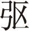

（末扮机坊大使官上）平生不作皱眉事，天下应无切齿人 [1] 。自家京城巡捉使，为抄札卢家有功 [2] ，超升外织作坊一个大使，此乃当朝宰相宇文老爷之恩也。老爷还要处置卢家，但是他夫人织造粗恶，未完事件，都要起发他一场。想起来也是个一品夫人，大使官多大，去凌辱他。（想介）有计了：督造太监将到，撺掇他去凌辱便了。在此伺候。（丑扮内官上 [3] ）本是南内押班使 [4] ，带作西头供奉官。吾乃掌管织造穿宫内使便是，好几个月不曾下局 [5] 。大使何在？（末见介）公公下局，小官整备茶饭伺候。（丑）你知近日朝廷有大喜事么？（末）不知。（丑）乃是吐番国降顺中华，带领西番一十六国侍子来朝 [6] ，所费锦段赏犒不赀 [7] ，故来催攒，你可知事？（末）小官知事，只是外机坊钱粮有限，无可孝敬公公。（丑恼介）不孝敬公公么，多大孙孙子哩！（末）不敢说，有一场大孝敬，只要老公公消受得。（丑）怎么大孝敬？（末）老公公半年不到此间，有个织妇，系卢尚书妻小。那尚书积贯通番，得些宝玉珍珠，都在那妻子手里。（丑）难道他双手送来？（末）马不吊不肥，人不吊不招。吊将起来就招了。（丑）我内家人心慈。（末）小官打耳眯子 [8] 。（丑）着，凭仗太监公公，欺负卢家妈妈。（下）（旦贴抱锦上）
【破齐阵】 一旦内家奴婢，十年相国夫人。零落归坊，淋漓当户，织处寸肠挑尽，怎 禁得吚轧机中语 [9] ？待学个 回环锦上文，残啼双翠颦。
［殢人娇］小织机坊，烟锁几重帘箔。挑灯罢，停梭梦着。流人江岭，半夜归来飘泊。宫墙近也，又被啼乌惊觉。望断银河心缅邈 [10] ，恨蓬首居然织作。天寒翠袖，试彩鸳双掠。正脉脉秦川，回文泪落。奴家卢尚书之妻清河崔氏。儿夫罪投烟瘴，奴家没入机坊，止许梅香一人相随。暗想公相在朝，夫荣妻贵，府堂之内，奴婢数百余人。奴有金貂，婢皆文绣。谁知一旦时事变迁？这也不在话下了，只是夫离子散，好不伤心呵。
【渔家傲】 机房静， 织妇思夫痛子身；海南路，叹 孔雀南飞，海图难认。（贴） 到 宫谱宜男双鸳处 [11] ，怕钿愁晕。梅香呵， 昔日个锦簇花围，今日傍宫坊布裙。（合） 问天天，怎 旧日今朝，今朝来 是两人？
（旦）在此三年，满朝仕宦，没个替相公表白冤情。（贴）好苦！好苦！
【摊破地锦花】 （旦） 大冤亲，把锦片似前程刌 [12] 。一谜谜尘，白日里黑了天门。待学苏妻，织锦回文 [13] 。（合） 奏明君，倘然间有 见日分。
（贴）夫人，织锦回文，献上御览，召还相公，亦未可知。笔砚在此，先填了词，好上样锦。（旦写介）《宫词》二首，调寄［菩萨蛮］ [14] 。待我铺了金缕朱丝，梅香班织 [15] 。（贴）是如此。（旦铺锦上织介）
【剔银灯】 无情绪丝头乱厮 引，无断倒挑丝儿厮认。一缕缕 金衬着 一丝丝柔 肠恨，一字字诗隐着 一层层 花球晕。（合） 回文玉纤抛损，一溜溜梭儿撺过 泪墨痕。
（内喝介）（贴）催锦的官儿将到，夫人趱起些 [16] 。
【麻婆子】 织就织就官锦，上辞儿受苦辛。蟋蟀蟋蟀天将冷，停梭怅远人穿花锦。滴泪眸昏，一勾丝到得天涯尽。（内喝介）（合） 促织人催紧，愁杀病官身 [17] 。（末同丑响道上 [18] ）
【粉蝶儿】 帽带馄饨，高带着 牙牌风韵 [19] 。
（末）已到机坊。（丑）还不见机户迎接，可恶，可恶。（贴慌介）督造内使来到。夫人，患难之中，只索迎接。（旦）我乃一品夫人，有体面的，你去便了。（贴应跪接介）机户迎接公公。（丑笑介）好，好。起来，起来。你就是卢夫人哩？（贴）机户叫做梅香。（丑问末介）怎么叫做梅香？（末）梅香者，丫头之总名也。春间讨的是春梅，冬天讨的是冬梅，头上害喇驴的叫做喇梅。不知是卢尚书那一时讨的，总名梅香。（丑笑介）梅香，梅香，有甚香处？（末）梅香者暗香也，都在衣服里下半截。（低介）吊起那一阵阵香，满屋窜来。（丑低）你才说珠宝一事，这丫头可知。（末）他是卢尚书的通房 [20] ，怎生不知？（丑叹介）则他便是卢尚书通房，其实欠通。（末）不要管他，只听我说一句，你发作一番便了。（丑）领教了。（见介）卢家的那里？（旦）公公少礼。（丑恼介）哎哟，你是管下的机户，不磕头，却教公公少礼，难道做公公的你处磕头不成？且抬犒赏夷人的锦段来瞧。（末）千字文编号，有个八段锦 [21] 。犒赏夷人字号：“宣威沙漠，臣伏戎羌。” [22] 每个字号该锦八匹，八八六十四匹。（丑）呈样来。（贴呈锦介）这“宣威沙漠”的样锦。（末耳语介）（丑）呀，锦文嚣薄 [23] ，不中不中？（贴又呈锦介）这是“臣伏戎羌”的锦。（末耳语介）（丑）忒软了。（贴）公公是不知，这“宣威沙漠”字号的锦，就要沙一般薄；“臣伏戎羌”的锦，就要绒一般软软的；都是钦降锦样儿。（丑问末介）敢是钦降的？（丑）你去点数来。（末点介）只有七七四十九匹，少造了八八六十四匹。（丑恼介）好打哩。（做打介）（贴遮）（旦哭介）
【普天乐犯】 锦官院，把 时光尽，织作署风雷迅 [24] 。（末耳语介）（丑）是哩，这锦上丝文长是断的，且不打正身，打这丫头伤春懒慢。（旦） 他 作官身甚伤春？到是俺 缕金丝肠断怀人。（末耳语介）（丑）是哩，怀人便是伤春，伤春便是怀人，好打好打。（旦背哭介） 织锦字字萦方寸，怎觑的 一丝丝都是泪痕滚？（回身指末介） 恨无端贝锦胡云 [25] 。（指锦介） 似这官 锦如云，甚干忙，要巴巴羯羯你这内家人 [26] 。
（末背嘴介）妇人骂老公公哩。骂你巴，又骂你羯狗 [27] ，好发作了。（丑恼介）呀，偏我巴，你不巴！我羯，你不羯！本待不寻思你，不怕不寻思你，待我亲自问他。那囚妇过来，听见你丈夫交通番回，有宝玉珍珠多少，拿送公公镶帽顶、闹妆鸾带可好？（旦）家私都打没了，那讨哪。（末耳介）（丑）是了，马不吊不肥，人不打不招。先把梅香吊起来。（吊介）（末假救介）老公公休打他，他自招来。（丑打，贴不伏介）哎哟，宝贝都没有了，珍珠到有些儿。（丑）在那里。（贴）裙窝里溜的。（贴尿，诨介）（丑）这是梅香下截的香窜将出来了。（内喝道，丑末慌介）司礼监公公响道了。（走介）（高上）
【金鸡叫】 帽拥貂 [28] ，红玉带蟒袍生晕。可怜金屋里有向隅人 [29] ，何日金鸡传信 [30] ？
自家高力士便是。（叹介）我与平章卢老先生交游有年，一旦远窜烟方，妻子没入外机坊织作。（叹介）好些时不曾看得他，知他安否？（丑末跪接介）督造机坊内使大使叩头迎接老爷。（高）去。（进见介）（高）夫人拜揖。（旦）不知老公公出巡，妾身有失迎接。（高）几番遣人送些酱菜时鲜，可到呢？（旦）都领下了。（哭介）老身好苦也。
【朱奴儿犯】 机丝脆，怕  忙摘紧 [31] ；机丝润看 雨暄风煴 [32] 。又怕 展污了 几夜残灯烬，奴便待 尽时样花文帖进。（高）使得，使得。（旦）奴家还有一言告禀：官锦之外，奴家亲手制下粉锦一端，回文《宫词》二首，献上御览，也表白罪妇一片苦心。（高）这不妨便与献上御前，或有回天之喜。（合） 凄凉运，凭谁问津，问天公怎 偏生折罚罚这弄梭人？
（贴哭叫介）老公公饶命。（高）夫人，饶了这丫头罢。（旦）不是老身难为他。不敢诉闻，都是贵衙门督造内使。（高）怎的来？（旦）到这也不催锦，也不看锦，只是打闹，讨宝贝若干，珍珠若干。老公公，你说罪犯之妇那讨呵？（高恼介）原来这等，小的儿快放下来。（丑忙松绑介）（高）军校带着小的，衙门伺候。（拿丑下介）也是大使作弄他。（高）连那大使拿着。（拿介）
【尾声】 （高） 缕金箱点数了 且随宜进。（旦） 聒杀人那 促织儿 声韵 [33] 。（高）夫人，老尚书呵， 终有日 衣锦还乡你 心放稳。
抛残红泪湿窗纱，织就龟文献内家
[34]
但得丝纶天上落
[35]
，犹如锦上再添花。
[1] “平生”句：宋元俗语。皱眉事，指坏事，缺德事。切齿人，指痛恨到极点的人。自己不做伤天害理的事，就不会有憎恨你的人。宋胡仔《渔隐丛话》后卷二十二“邵康节”：“《复斋漫录》云：邵尧夫居洛四十年，安贫乐道。自云未尝皱眉，故诗云：‘平生不做皱眉事，天下应无切齿人。’”
[2] 抄札（zhá）：亦作“抄扎”，抄查没收、抄家。《元典章·刑部五·烧埋》：“原抄札人口内有苦主之家……烧埋银五十两就便给付苦主收管外，无苦主之人不须征埋，所据原抄札。”
[3] 内官：太监。下文的“南内押班使”、“西头供奉官”、“穿宫内使”都是宫内太监的官职。
[4] 南内：唐代长安的兴庆宫。原系玄宗为藩王时故宅，后为宫，位于大明宫（东内）之南，故名。唐白居易《长恨歌》：“西宫南内多秋草，落叶满阶红不扫。”
[5] 下局：到织造局巡查。
[6] 侍子：古代属国之王或诸侯遣子入朝陪侍天子，学习文化，所遣之子称侍子。《后汉书·光武帝纪下》：“鄯善王、车师王等十六国，皆遣子入侍奉献，愿请都护。帝以中国初定，未遑外事，乃还其侍子，厚加赏赐。”
[7] 不赀（zī）：无从计量，表示贵重。
[8] 打耳眯子：耳语，附着耳朵小声说话。
[9] 吚轧：象声词，织机发出来的声音。
[10] 缅邈：绵长的样子。唐张说《游洞庭湖湘》诗：“缅邈洞庭山由，葱蒙水雾色。”
[11] 到宫谱宜男双鸳处：宜男，宜男草，萱草的别名。《齐民要术·鹿葱》引晋周处《风土记》：“宜男，草也，高六尺，花如莲。怀妊人带佩，必生男。”“宜男”“双鹭”指宫廷织锦图案。
[12] 刌（cǔn）：隔断、切断、划断。《说文》：“刌，切也。”
[13] “待学”句：指晋代才女苏蕙用五色丝织回文诗一事。《晋书·窦滔妻苏氏传》：“窦滔妻苏氏，始平人也。名蕙，字若兰。善属文。滔，苻坚时为秦州刺史，被徙流沙。苏氏思之，织锦为回文旋图诗以赠滔，宛转循环以读之，词甚凄婉，凡八百四十字。”
[14] ［菩萨蛮］：词调名。唐教坊曲。最先有李白所作词，疑为伪证。
[15] 班织：展开编织。
[17] 官身：没入宫中为奴的女子。《宋史·太宗纪一》：“继元献官妓百余，以赐将校。”
[18] 响道：喝道。官员出行，随从喝令行人让路。
[19] “帽带”句：古代头巾的样子。馄饨，帽带结成馄饨形状。牙牌，明沈德符《万历野获编》卷十三“平牌”：“唐宋人士，腰带之外，又悬鱼袋，为金为银，此别等威。本朝在京朝士，俱佩牙牌。然而大小臣僚皆一色，惟官号为别耳。”
[20] 通房：名义上是婢女，实际是姬妾一类的。《红楼梦》第六回：“进了院门，知凤姐未下来，先是找凤姐的一个心腹通房大丫头名唤平儿的。”
[21] 八段锦：中国古代流传下来的一种气功功法。八段锦由八节组成。宋洪迈《夷坚志》九《八段锦》：“尝以夜半时起坐，嘘吸按摩，行所谓八段锦者。”这里指用八个字命名的锦缎，即文中所云“宣威沙漠，巨伏戎羌”。
[22] “宣威”二句：出自南朝周兴嗣《千字文》，原句为：“宣威沙漠，驰誉丹青”、“受育黎首，臣服戎羌。”戎和羌都是西北少数民族。意思是向西北少数民族显示国威，使之臣服。
[23] 嚣薄：微薄轻浮。《醒世姻缘传》第三十回：“他又想：‘南方风俗嚣薄，我这样落拓回去，素日甚有一个骄惰的虚名，那个寺里肯容我住下？’”
[24] 锦官院、织作署：即织造局。
[25] 贝锦：古代锦名。上有贝形纹饰。后用来比喻构陷之言。《诗·小雅·巷伯》：“萋兮斐兮，成是贝锦。彼谮人者，亦已大甚！”郑玄笺云：“喻谗人集作己过以成于罪，由女工之集采色以成锦文。”
[26] 巴巴羯（jié）羯：勉勉强强。
[27] 羯狗：被阉割过的狗。羯，指阉割过的公羊。这里骂的是太监。
[28] 貂 ：貂尾与附蝉，指帽饰。古代侍从官员帽上的装饰物，始于汉代武官。《后汉书·舆服志下》：“武冠，一日武弁大冠，诸武冠之。侍中、中常侍加黄金珰，附蝉为文，貂尾为饰，谓之‘赵惠文冠’。”后以貂 比喻达官显贵。
[29] 向隅：面对着角落，比喻孤独、失望、伤心。宋苏轼《立春日……请成伯主会二首》之一：“老子从来兴不浅，向隅谁肯满堂欢？”
[30] 金鸡：一种金首鸡形。古代颁布赦诏时所用的仪仗。《新唐书·百官志三》：“赦日，树金鸡于仗南，竿长七丈，有鸡高四尺，黄金饰首，衔绛幡长七尺，承以彩盘，维以绛绳。将作监供焉。击鼓千声，集百官、父老、囚徒。”李白《流夜郎赠辛判官》：“我愁远谪夜郎去，何日金鸡放赦归？”
[31] （kōu）：《玉篇》：“弓弩端弦所居也。”“桑弰其末刻锲，以受弦彄。”即弓弩两端系弦之处。
[32] 煴（yūn）：微火，无焰的火。《说文》：“煴，郁烟也。”《汉书·苏武传》：“置煴火。”师古注曰：“煴谓聚火无焱者也。”
[33] 聒（guō）：形容非常喧闹、嘈杂。《左传·襄公二十六年》：“聒而与之语。”
[34] 龟文：龟背的纹理。汉蔡邕《篆势》：“文体有六篆，巧妙入神，或象龟文，或比龙鳞。”这里指织锦回文。内家：皇帝。
[35] 丝纶：皇帝的诏书。《礼记·缁衣》：“王言如丝，其出如纶。”孔颖达疏：“王言初出，微细如丝，及其出行于外，言更渐大，如似纶也。”唐杜甫《奉和贾至舍人早朝大明宫》：“欲知世掌丝纶美，池上于今有凤毛。”
《织恨》这出戏主角是崔氏。昔日贵为一品夫人的崔氏，“公相在朝，夫贵妻荣”、“奴婢数百余人”、“婢皆文绣”，一旦入宫中为奴，“傍宫坊布裙”，只有一个梅香相伴。不仅“织就织就官锦，上辞儿受苦辛”，而且还被宇文融的走狗机房大使，伙同宫中宦官“讨宝贝若干，珍珠若干”。明明是上好的织锦，非得要说“太嚣薄”，还把崔氏的丫鬟梅香吊起来打，幸亏高力士过来解围。崔氏趁机将织好的“粉锦一端，回文《宫词》二首”，让高力士“献上御览”，为下文卢生沉冤昭雪奠定了基础。崔氏在宫中的遭遇，实际是明代织造之害的体现，《明史·章侨传》云：“又言添设织造内臣贪横殊甚，行户至废产禽子以偿。”
《邯郸记》中的主角虽是卢生，但是其妻子崔氏，形象也很突出。她对卢生一片真心，其总是在关键时刻，决定了卢生的命运。她赞助卢生进京赶考，云阳市上救下卢生，织锦回文为卢生鸣冤等等。汤显祖塑造的这个形象带有一定女性主义意识。
剧中织造使与宦官及梅香的插科打诨，一方面揭示了织造史与宦官的贪婪与凶残，在舞台方面，亦体现了当时舞台演出的一种风气。汤显祖的《邯郸记》中，多处涉及男女之情的隐语，如《入梦》中崔氏与卢生的成婚，《望幸》中驿丞与囚妇的插科打诨，《死窜》中崔氏与卢生的饮酒，以及本出戏中末、丑、贴的插科打诨。这些看起来似乎是无理取闹，但从舞台演出的角度而言，是符合当时观众的欣赏心理的。